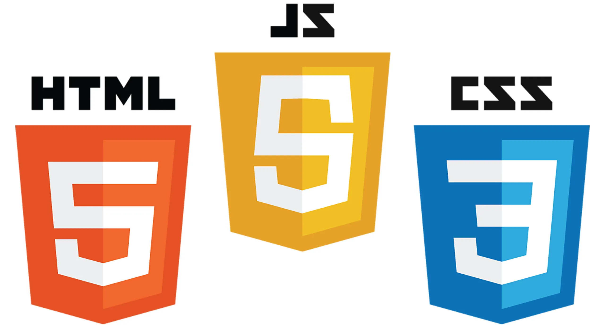

Klondike
Next Sunday’s planning meeting, from 5:30 to 6:30 PM, will focus on preparing our scouts for Camp Birch’s annual Klondike event, which takes place the following Friday and Saturday. Scouts will review important skills such as knot-tying, fire-building, and teamwork, essential for the competition. They will also finalize their sled designs and pack lists to ensure readiness for the event.

At Camp Burch, the Klondike event is a highlight of the year. Scouts compete in challenges inspired by the rugged survival skills of the Klondike Gold Rush. Activities include pulling sleds through obstacle courses, solving first-aid scenarios, and demonstrating leadership under pressure. The event fosters camaraderie, sharpens outdoor skills, and is a fun way to embrace the spirit of adventure in winter conditions.
The Klondike event not only tests scouts’ physical endurance and practical skills but also emphasizes the importance of problem-solving and adaptability in high-pressure situations. By working together to overcome challenges, scouts strengthen their bonds as a team and develop confidence in their abilities. Whether it’s navigating icy trails, starting a fire in the cold, or improvising solutions to unexpected problems, Klondike provides an unforgettable experience that embodies the core values of Scouting: preparedness, resilience, and teamwork.
New Website
Our troop is excited to announce the launch of our brand-new website, designed to enhance communication and keep everyone informed. The updated site features a modern layout, including a user-friendly navigation bar, a brand new landingpage, and a resources section for scouts and parents.

With the new website, you can easily access information about how to join the troop, download important documents, and get in touch with us. Our goal is to provide a smoother user experience while making it easier for new members to connect and helping the troop grow.
This website represents our commitment to staying connected and fostering growth within the troop community. It not only serves as a hub for important updates and resources but also reflects the spirit and dedication of our scouts. Whether you’re a current member or someone interested in joining, the site is a gateway to everything our troop has to offer—from upcoming events and achievements to ways you can get involved. We’re excited to see how this digital upgrade will enhance our scouting experience and strengthen our connections.